Bribery, Botting, and other Shenanigans - Cursed CTF 2024
Bribery, Botting, and other Shenanigans - Cursed CTF 2024

Overview⌗
Cursed CTF Quals 2024 was a CTF designed to contain cursed things like most of the CTF being OSINT, unsolvable challenges, and other funny challenges.
I played with the Oceania Merger team joseph fan club and we managed to secure first place without being disqualified!
In this post, we will go through the funny moments of the event, and how we were able to win using unethical strategies such as bribing organisers, making 10000 accounts for a stuffed cow, and much more. Enjoy!
The Iceberg Explained⌗
We will use this iceberg, inspired by cts, to rank each funny/cursed moment of the CTF.
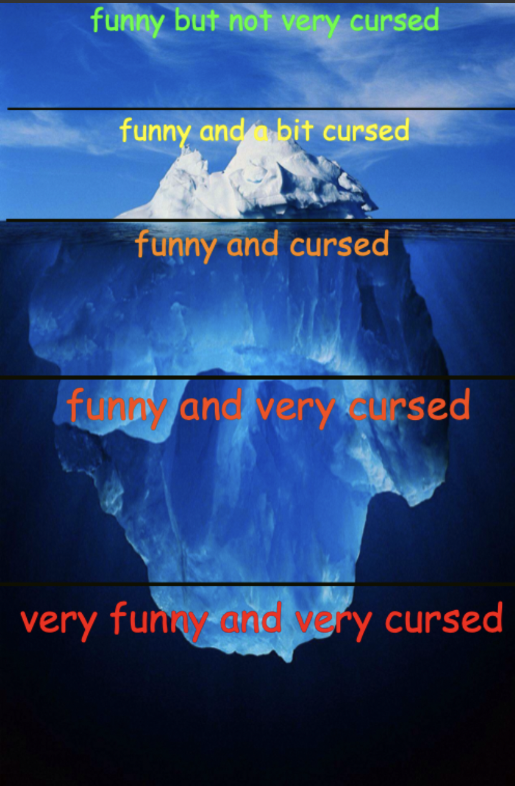Each level of the iceberg is pretty self explanatory. Anything in the orange or below would probably cause some drama and/or banning in a normal CTF.
Without further ado, here are all of the funny and cursed moments from Cursed CTF 2024!
Login button covered⌗
To even login to the CTF, you had to get around the button which was covered by some animated sparkles.
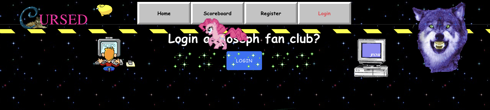It wasn’t very hard to get around, just by inspect element deleting or adblocking etc. but there was actually a very small gap on top that you could click.
There were also many random things floating around the page like My Little Pony, which was a bit annoying.
Not too cursed, but a good start.
Challenge author participation⌗
I actually authored a crypto challenge for this CTF, named fuck-joseph, and yet I was allowed to participate.
The challenge itself was quite simple - simply crack a 512 bit RSA modulus, and the flag is yours:
from Crypto.Util.number import *
from flag import flag
n = getPrime(256) * getPrime(256)
e = 0x10001
print(n)
print(pow(bytes_to_long(flag), e, n))
The intended solution was to drop $100 on a cluster to factor n, but since I made the challenge and had the flag, I just blooded it immediately after the CTF started.
I should probably elaborate on the challenge name “fuck joseph”. joseph is a CTF player, who my main team (Emu Exploit) jokingly despises due to how good he is. The intended joke was to troll him with an ‘unsolvable’ / pay to win crypto challenge for him to solve, as crypto is his specialty.
This kind of backfired however as we decided to play in our Oceania Merger team, which joseph was in, and now we had to solve the challenge.
No hate to joseph btw, we are joseph fan club after all <3
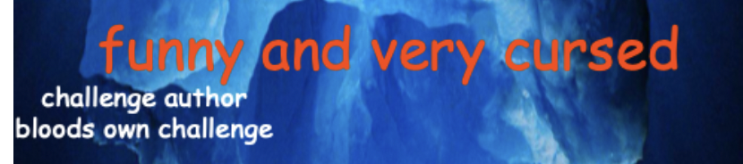Primes uploaded to factordb⌗
With my fuck-joseph challenge, I thought I was guaranteed around ~500 free points as not many would bother factoring a 512 bit number. However, it turns out someone uploaded the factors to factordb, resulting in >30 solves.
I suspect 0rganizers to be the culprit, being the second solve. But I can’t really be mad - it’s a cursed CTF after all. Props to them for solving it legitimately, too.
Edit: it was actually a organiser, but they also solved it legitimately lol
{kind=link}
Registering 10000 accounts for a cow plushie⌗
There was a prize of a cute cow plushie for the median team on the scoreboard.
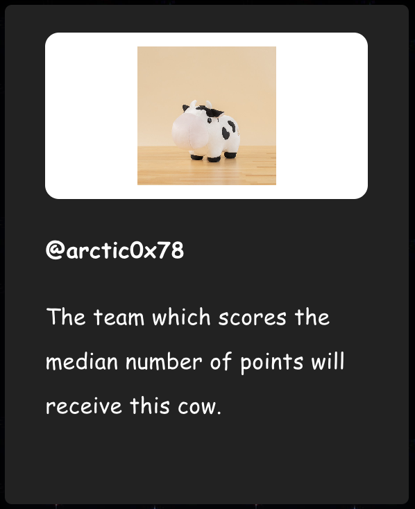Originally, I didn’t even know this prize existed, until organiser sky encouraged us to go for it.
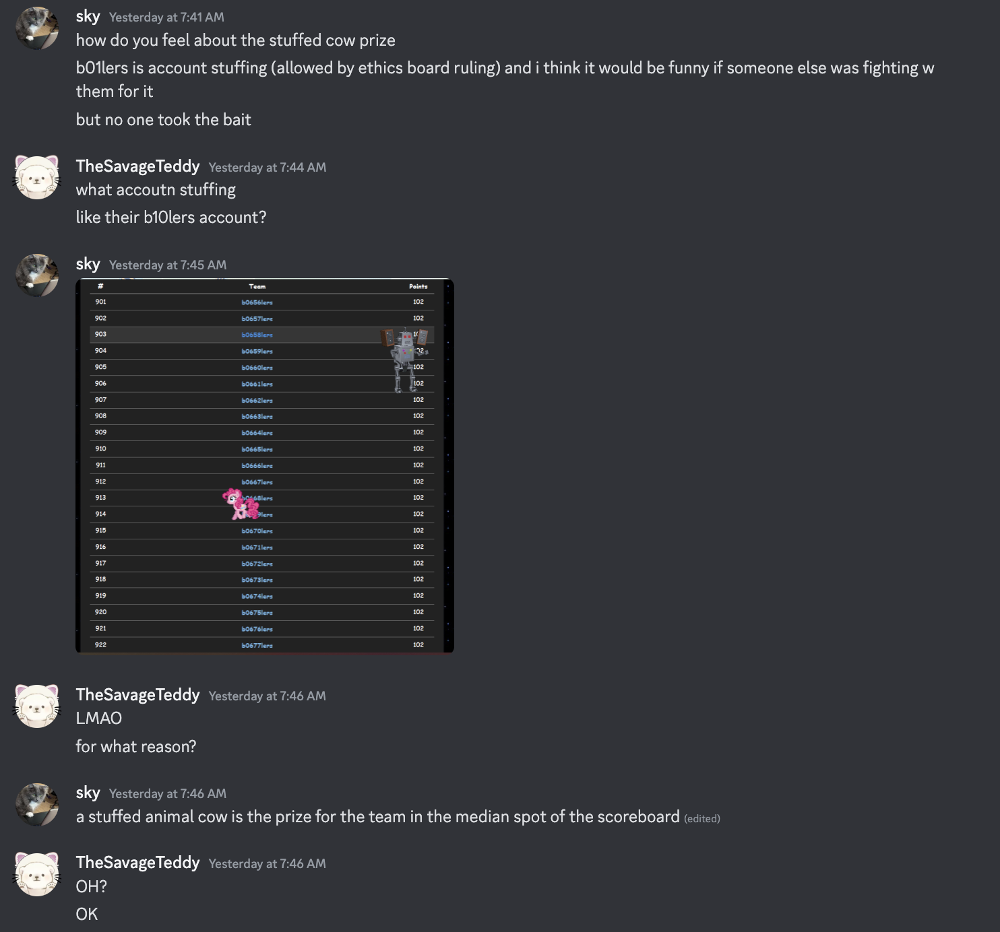The idea behind ‘account stuffing’ is that if you own more than 50% of the accounts on the scoreboard, and they all sit on the same number of points, one of the accounts is guaranteed to be the median.
The previous contender, b01lers, had already filled the scoreboard with around 1000 accounts. We figured that we can probably beat them, and devised a plan:
- Automatically register and verify as many accounts as possible
- When the time comes, use script to submit a flag for each account
Our main trick was that accounts with 0 points didn’t show up on the scoreboard, so no one would see our accounts until we started submitting flags for them.
Huge thanks to HexF who registered and verified almost 10000 accounts with his script.
He was working on making a mail server specifically for catching verification emails, verifying them and storing the auth tokens for even faster account creation, until we were shut down…
Registrations disabled⌗
The admins eventually responded to our mass account creation by disabling registration, as it was costing them too much money.
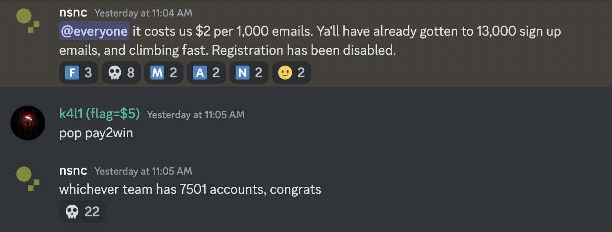By creating more than 10000 accounts, we cost the organisers over $20. Around 9500 of these accounts were successfully verified, meaning we owned around 85% of all registered accounts, and could flood the scoreboard at any time.
Flooding the scoreboard⌗
Originally, we wanted to be stealthy and start submitting flags for the accounts right before the CTF ended, but since registrations are now disabled and we owned most the accounts, it didn’t really matter.
I ran my script to spam submit a flag for all ~9500 accounts, and watched the scoreboard fill with joseph fan clubs.
The script finished after 30 minutes, and the scoreboard was 111 pages long, consisting of 11000 teams.
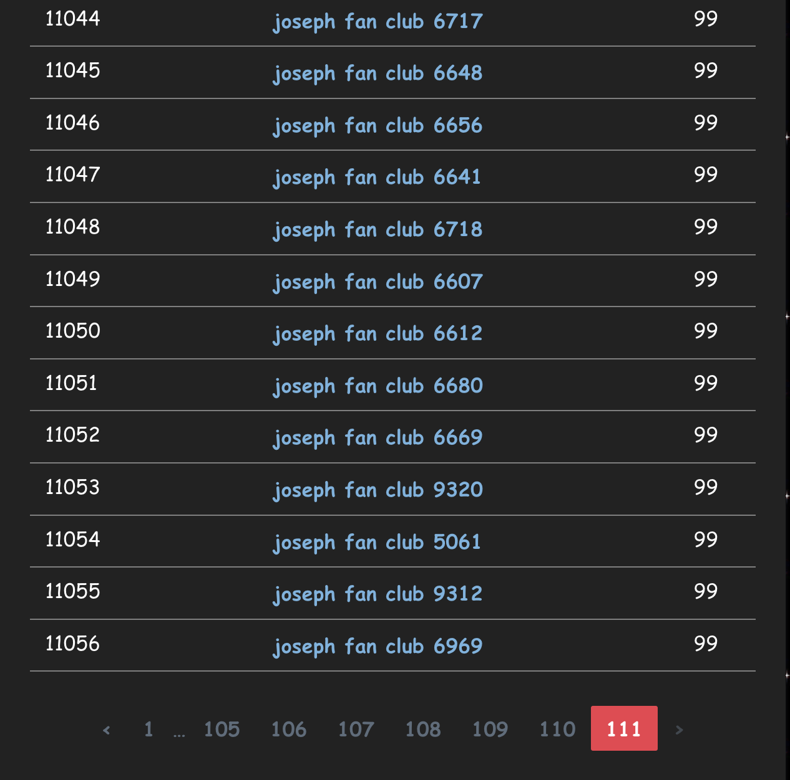The challenge we chose to submit, Geoguessr5, ended up with 9600 solves.
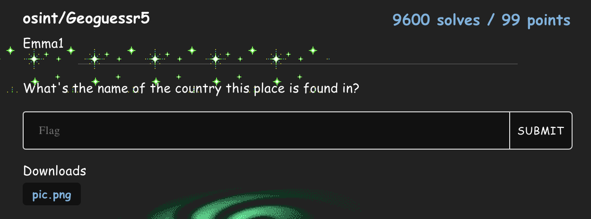Not only did we cost the organisers $20 by registering 10000 accounts, we also cost them some additional shipping fee for living on the other side of the world.
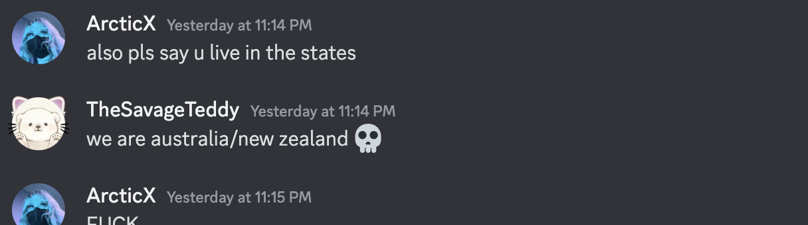Some truely cursed stuff. I wonder if they will upload the entire scoreboard to CTFTime…
Edit: they actually did it
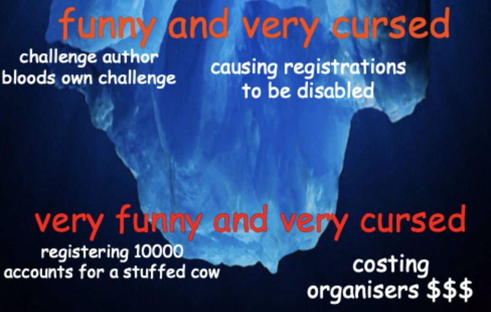Signups as a service⌗
With registrations disabled, some newcomers weren’t able to play the CTF. emily decided it would be funny to distribute some of our 9500 accounts for people to use.
As well as pasting some login links in the cursed CTF discord, she setup a website to provide accounts. Being a DUCTF organiser, she came up with the domain name logintocurse.duc.tf which fit perfectly. Visitors would be redirected to a login link for one of our many accounts.
Pay to Win challenges⌗
It wouldn’t be a cursed CTF without some pay-to-win challenges. Thanks to emily for sacrificing $15.36 AUD for this flag.
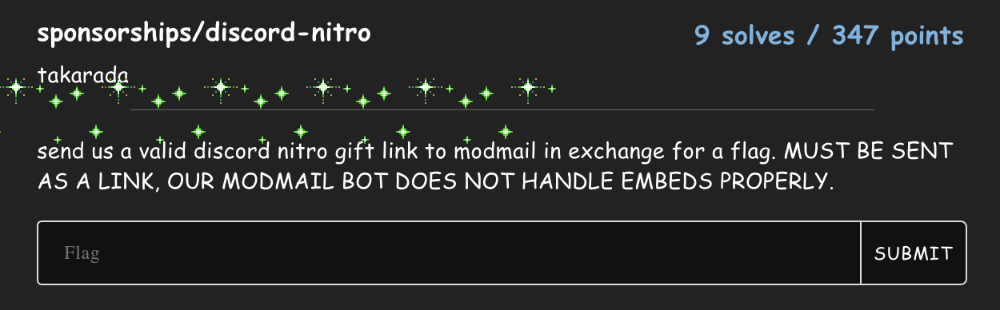Another chal, literally called paytowin, increased the flag’s price by $1 after each purchase.
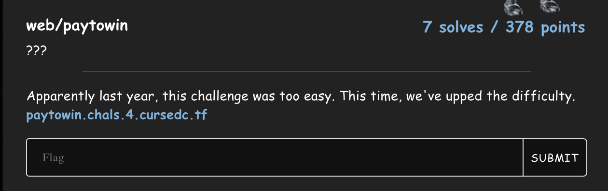Thanks to toasterpwn for his sacrifice of $17 AUD ($11 USD).
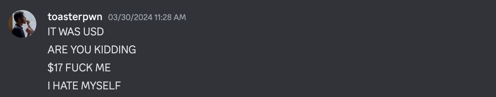 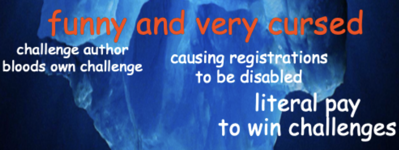Trading Flags with organisers / Bribery⌗
Some of the challenges such as finding a kernel 0 day were straight up (almost) unsolvable. Therefore, toasterpwn took initiative and bribed sky with an EMU shirt for the flag and hints for another challenge.
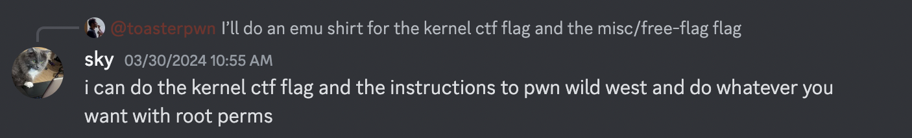This first trade set off a cascade of bribery and trading. There was a challenge named free-flag which (initially) gave a character of the flag every hour. Being impatient, we started to bribe admins for characters until avery accepted takarada’s request for guest access to the private Emu Exploit discord in exchange for the flag.
This wasn’t even takarada’s challenge, and I had already previously bribed kroot, the challenge author, to give us half the characters in exchange for the same thing. Too bad Emu Exploit’s team captain toasterpwn wasn’t online when I asked him for permission. He wasn’t either when takarada joined, but avery (below: cts from wish.com) ignored that.
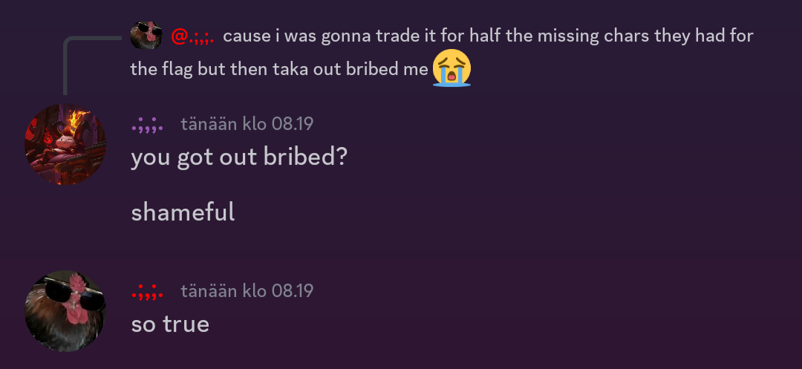{kind=link}
Next, I again traded access to the Emu Exploit discord server with sky for the IDA Pro challenge.
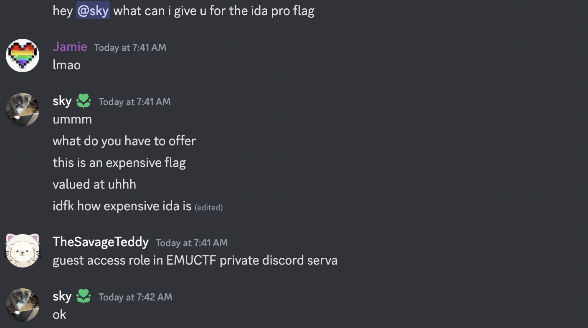The intended non-bribery solution was to buy/give the IDA Pro subscription which costs couple hundreds to thousands of dollars.
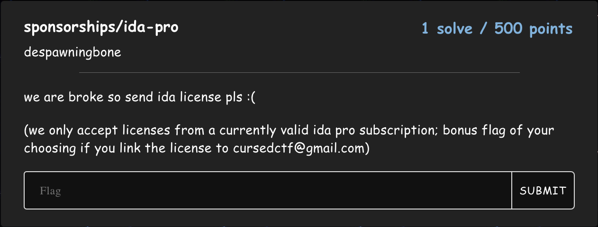{kind=link}
Funny that it was announced we actually bought the license, whereas it was just some trolling.
{kind=link}
{kind=link}
The next day, instead of trading Emu related things, avery decided to initiate another trade with sky, providing images of a manga book of a specific genre in exchange for a flag and a hint for another challenge.
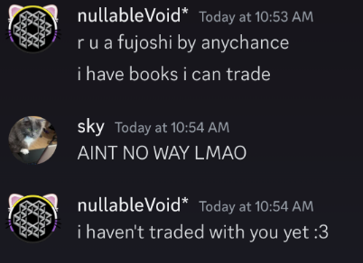 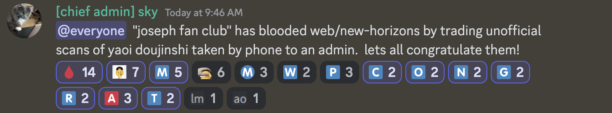As we were nearing 69/99 flags submitted, we wanted a few more flags to get there. HexF traded some DownUnderCTF hardware infra schematics (not for challenges) for a few flags / hints, getting us up to the nice number.
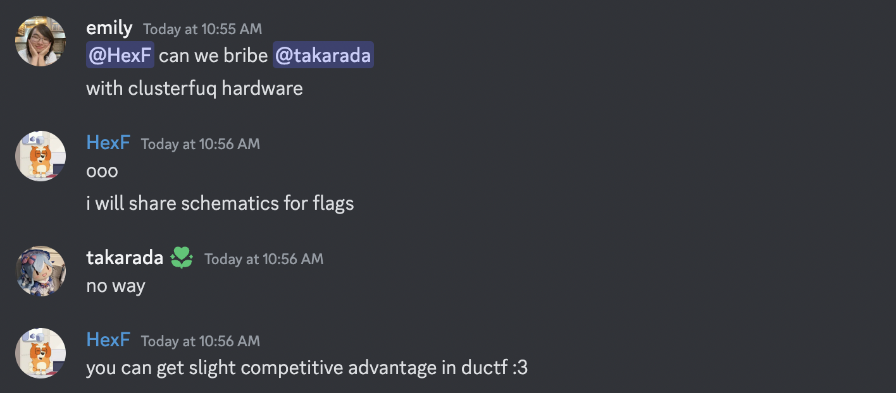 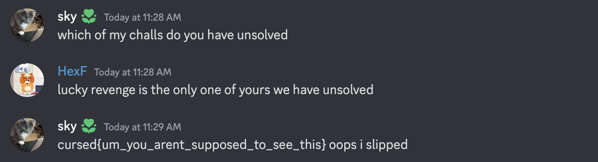 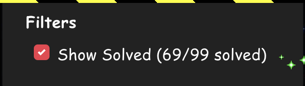Nepotism Trading all the way.
Flags leaked on Discord server⌗
On the cursed CTF official discord, there was fittingly a channel named #leaked-flags.
During the competition, it was revealed to us that some of the flags leaked by organisers in this channel were actually real flags.
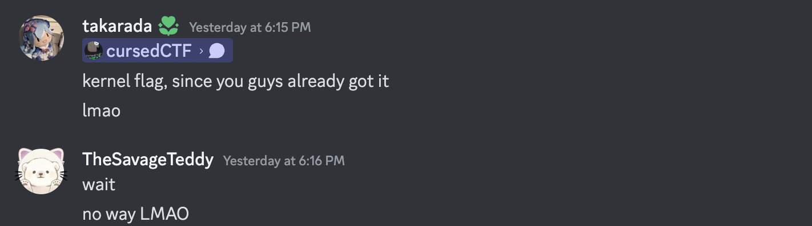After realising this I scraped all messages from the channel, and used a script to try every message, unwrapped and wrapped with the flag format cursedctf{} for every unsolved challenge. However, with a rate limit of around 1 submission every 3 seconds, it was quite slow.
Luckily for us, rate limiting was done per account. We had 9500 of them. So I simply modified my script to rotate through different auth tokens for each submission, making it much faster. Sadly, although it submitted around 15000 flags, none of them worked for challenges we haven’t already solved.
In total I’m aware of 2 challenges that had their actual flags leaked in this channel.
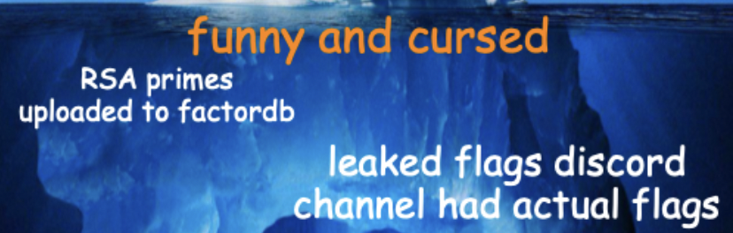Scuffed challenges⌗
Although most challenges in this CTF are intentionally cursed, I wanted to point out a few funny ones.
This crypto challenges required you to sit through 32x 5 second ads, one for each encryption key. I wonder how much the challenge author made off this.
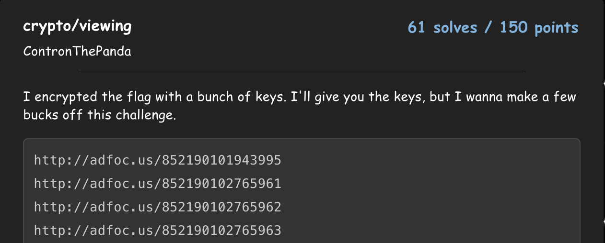This one was pretty funny. You had to make an upload a youtuber apology video (don’t apologise) for flag sharing to get the flag. Props to my teammate ss23 for making this amazing video.
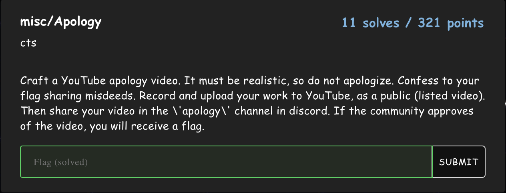Over a third of the challenges were OSINT - a detriment to most CTF players. Huge thanks to my teammate lokifer for solving most of these!
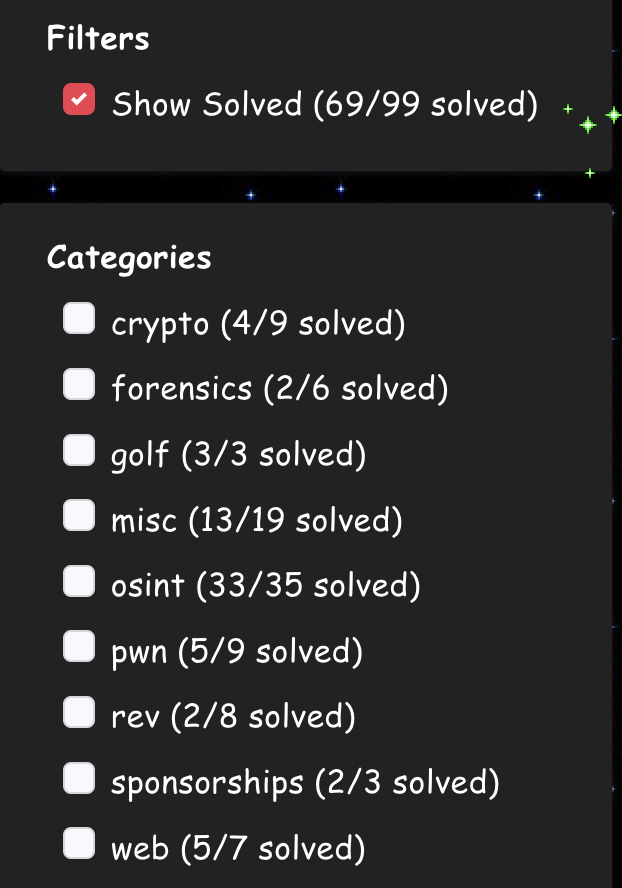Also note the 19 misc challenges. That’s right, half of the CTF weren’t even (real) challenges. I mean most of them aren’t anyways.
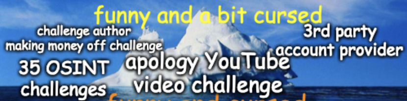There were also assembly golfing challenges for leetcode challenges, where your code had to be shorter than the previous submission, and my team had some pretty cursed solutions for palindrome_number, fizzbuzz and two_sum.
The Final Iceberg⌗
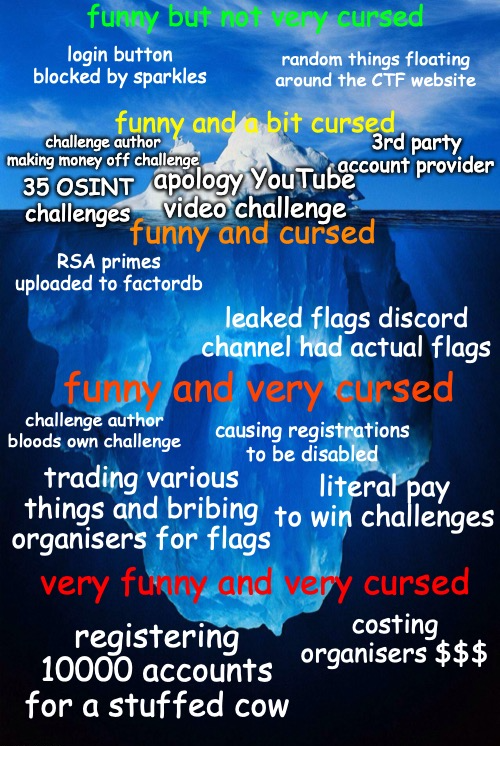Conclusion⌗
This CTF was really fun due to the cursed nature of it. Huge thanks to my team for the effort they put in (there were actual non-troll hard challenges that they solved), and I’ll be looking forward to the (remote) finals!
Let me know what other cursed moments you experienced during the CTF, or for any questions/corrections: DM thesavageteddy on discord, or teddyctf on Twitter/X.
- teddy / TheSavageTeddy